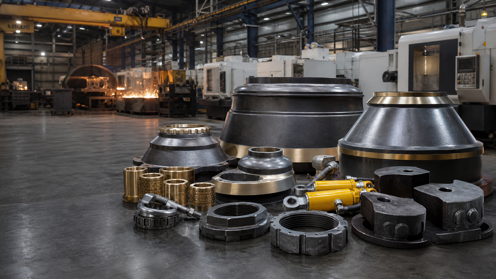

ISO документы
Записи ISO 9001, 14001 и 45001 для квалификации поставщика при необходимости.

Независимый производитель aftermarket запчастей
XCT Mining производит конусные футеровки, бронзовые втулки, стопорные гайки, противовесы, гидравлические муфты безопасности и другие детали для горнодобывающих и щебеночных предприятий.
Для покупателей, которым важны посадка, срок и прослеживаемость
Ассортимент включает mantles, bowl liners, concaves, eccentric bushings, frame bushings, lock nuts, torch rings, counterweights, hydraulic safety couplings, jaw plates и VSI rotor tips. Для точного предложения отправьте модель дробилки, номер детали, фото или чертеж, материал, количество и страну назначения.
Галерея продукции на белом фоне
Просмотрите основные группы деталей, которые XCT Mining может рассчитать по модели машины, номеру детали, чертежу, образцу или фото изношенной детали.
 Wear Parts
Wear PartsMantle, bowl liner и concave для HP, GP, CH и CS style конусных дробилок.
 Bronze / Copper
Bronze / CopperЭксцентриковые втулки, frame bushings, socket liners, sleeves и медные детали.
 Cast Steel
Cast SteelЭксцентриковые противовесы и стальные компоненты по образцу или чертежу.
 Hydraulic
HydraulicУзлы защиты для release, reset и sealing applications дробилки.
 Jaw / VSI
Jaw / VSIJaw plates, cheek plates, VSI rotor tips, distributor plates и grizzly bars.
Ассортимент
Мантии, bowl liners и concaves для вторичного, третичного и мелкого дробления.
HydraulicКомпоненты защиты, где важны давление, герметичность, срабатывание и возврат.
Bronze / CopperЭксцентриковые втулки, frame bushings, socket liners и медные детали.
MechanicalLock nuts, mantle nuts, torch rings и крепеж для обслуживания.
Cast SteelЭксцентриковые противовесы и литые стальные компоненты.
Jaw / VSIJaw plates, cheek plates, rotor tips и Barmac-style wear parts.
Совместимость и RFQ входы
Названия Metso, Nordberg, Sandvik и Barmac используются только для идентификации совместимости. XCT Mining является независимым aftermarket supplier.
Торговые марки принадлежат их владельцам; ссылки на них не означают авторизацию или связь с брендом.
Модель, номер детали, размеры, материал и условия работы.
Литье, CNC, токарная, сверлильная, фрезерная и шлифовальная обработка.
Визуальный, размерный, материальный и функциональный контроль.
Экспортная упаковка, смешанные заказы и отгрузка через Shanghai Port.
Доказательства для закупки
Покупателям промышленных запчастей нужны документы, контроль и детали отгрузки до запуска производства.
Записи ISO 9001, 14001 и 45001 для квалификации поставщика при необходимости.
Прослеживаемость, химический состав, твердость, размеры и визуальная проверка.
Маркировка, защита от ржавчины, деревянные ящики или паллеты.
Смешанные заказы через Shanghai Port или экспедитора покупателя.
Инженерные материалы
Список данных для футеровок, бронзовых втулок и spare parts с меньшим риском ошибки.
Series pageAftermarket replacement parts compatible with HP series cone crushers.
Series pageRFQ entry for CH style cone liners, bronze bushings, lock nuts and counterweights.
Model pageRFQ page for HP300 mantle, bowl liner, bushings, lock nuts and torch rings.
Reference RFQUse reference number, drawing, nameplate or used-part photos to start an RFQ.
QualityMaterial, dimensions, machining, packing and documentation points buyers can verify.
МатериалВыбор марки по удару, абразивности, питанию и текущему ресурсу.
RFQ checklistМодель, камера, номер детали, износ и страна назначения.
РемонтСмазка, посадка, загрязнение и нагрузка перед заменой.
Запрос цены
Используйте email, WhatsApp или скопируйте структурированный текст RFQ. Приложите чертежи, фото, OEM references или шильдик.